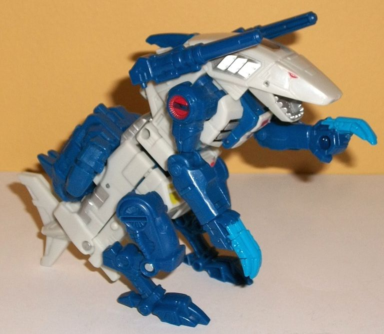
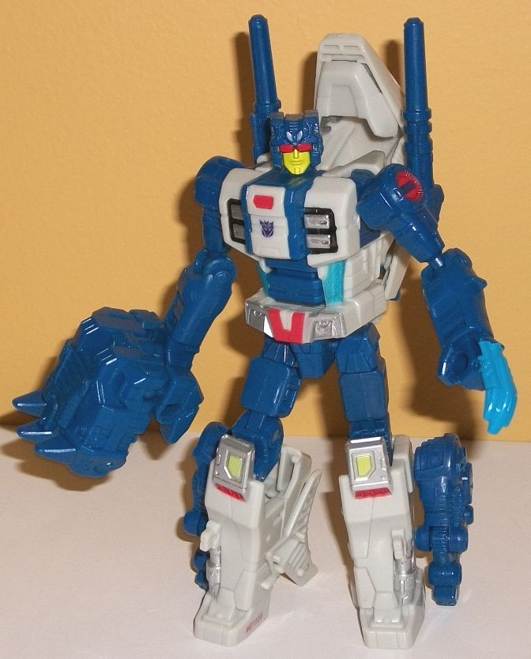
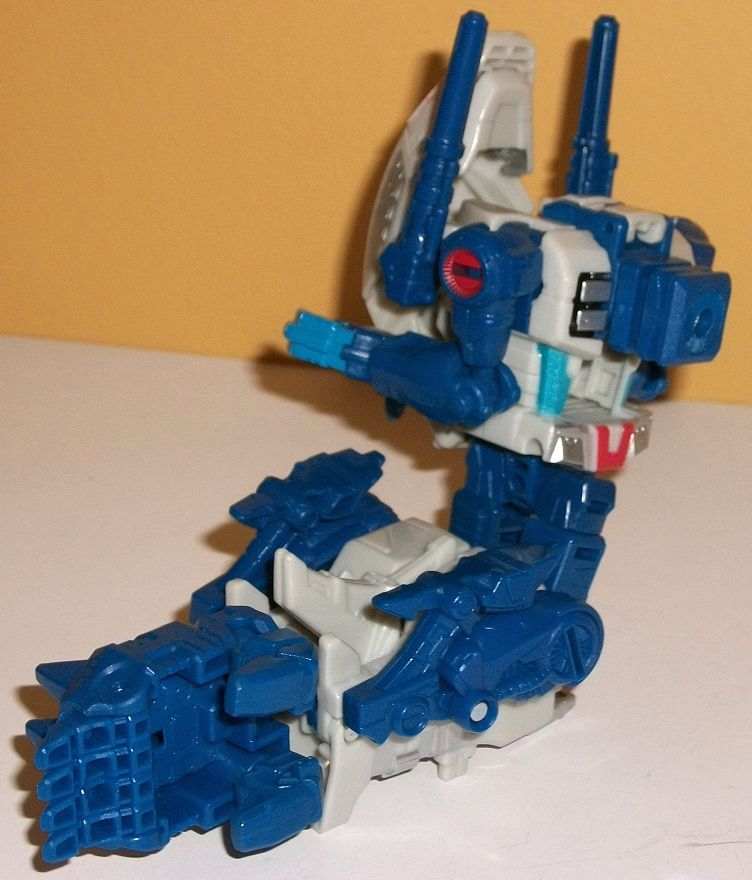
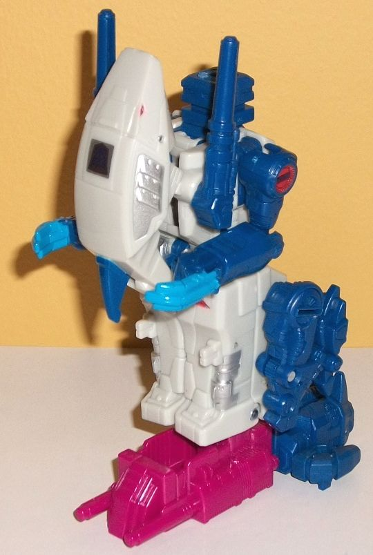

Allegiance
: Decepticon
Size
: Deluxe
Difficulty of Transformation to Robot:
Easy
Difficulty of Transformation to Leg
:
Very Easy
Difficulty of Transformation to Arm
:
Very Easy
Color Scheme
: Dark blue, off-white,
and some silver, red, light metallic silvery blue, pale yellow, black and
moderately light blue
Rating:
7.7


Rippersnapper's
beast mode is a walking robotic shark monster-- and he was the first one,
so move aside, Seacons! Anyways, in beast mode Rippersnapper is more of
a long rectangle with a head, appendages, and a tailfin as opposed to what
you'd imagine a shark monster would like-- that is, sleek. The lower end
just doesn't look right, as it's too wide, though the tailfin bits coming
off the bottom do help some. Beyond that, the proportions are pretty decent--
at least, as far as I imagine a two-legged shark monster would BE proportioned.
There's no robot mode extras, except for the robot hands, which are blatantly
obvious underneath the hand claws, unfortunately. The mold detailing alternates
between some parts that are sparsely detailed but smooth-- like the shark
head-- to rather rectangular, detailed bits like both sides of the main
body, where there's lots of little tech detailing that makes it all look
more robotic. The legs have a "chicken-walker" stance to them, with really
well-detailed "spring" details on them, and with rather bird-like large
claws for feet. As for the color scheme, the main body is almost entirely
an off-white shade of plastic, while the Prime Armor and the appendages
and weapons are a dark blue plastic. It's a fitting color scheme for a
shark monster, and there's plenty of paint details to keep all that off-white
on the body from getting too bland. There's silver on the "gill" details
on the sides of the shark head, as well as on the back on what become the
robot knees and lower legs, and silver on the shark chest and what becomes
the robot waist. There's a bit of black paint around the silver chest details,
really bringing them out and emphasizing them-- given that it's really
not used anywhere else, it was a good paint app choice. A pale yellow is
also used around the waist of this mode and on the back (where the knees
are in robot mode). Against the off-white, though, the pale yellow is just
too light and doesn't contrast enough; it doesn't really add much to the
color scheme. Red is also used on Rippersnapper-- on the shark eyes, on
the shoulders, and on small rectangular details on the back (what becomes
the robot knees), chest, and what becomes the robot waist. It serves as
a nice contrast against the blue and white. Finally, there's a bit of a
lighter shade of blue, used for the hand-claws and the area surrounding
the abs. I wish some paint was used on the tailfin piece, but otherwise
it all looks pretty good. In an interesting twist, Rippersnapper has either
some paint apps or a sticker (I'm not sure) on the top of his head that
mimics a G1 rub symbol, but with the Decepticon symbol permanently showing.
Interesting G1-y touch, there. Rippersnapper has two cannons, which are
stored on the sides of the base of his head, and can move up or down in
this mode. Rippersnapper's Prime Armor can, thankfully, fit on securely
on his lower back, instead of it just being placed awkwardly somewhere
on one of his appendages like on some other PotP beastformers. He also
has two small pegs on his back, behind his dark blue fin, where you can
fit a Prime/Titan Master. For articulation in this mode, Rippersnapper
can move at the jaw, shoulders, elbows, wrist rotation, and movement at
the hips, knees, and at two spots at the base of his fin-tail. Most of
these joints are ball joints, so his appendages are fairly posable even
if his body's a brick.
Rippersnapper's transformation
is quite simple-- you mostly just extend the robot legs from the main body,
rotate the shark head back to reveal the robot head, and then fold up the
tailfin and beast legs onto the lower legs. The arms stay the same, you
just rotate them at the wrists so the fists are more apparent. The end
result makes for a fairly well-proportioned robot. He does have a little
bit of kibble-- most obviously the shark legs just hanging off the sides
of his lower legs. I wish those folded away somehow. The shark head also
is behind his robot head, but the way you it sticks straight up and frames
his head, I think it enhances his silhouette slightly, so I don't mind
it much. Same with the shoulder cannons, though he can hold them in his
fists, as well. The fins, thankfully, fit into the back of his lower legs
pretty perfectly and give him heels to boot, so no problems there. Sadly,
I don't have as much to say about this robot mode as I do for most other
deluxes because... well... I mean, it's the shark mode with just those
changes made. The same mold and paint details are all there, with generally
the same color scheme layout to boot-- just a bit more dark blue because
of the exposed upper legs. The head is the only really new piece of detailing
in this mode. Rippersnapper has a fairly square head, with a forehead vent
and large red "visor-like" eyes that are nevertheless separated by his
nose. He has a "normal" face and mouth, painted pale yellow. It looks good,
though not what I'd expect for a guy who forms a shark monster. Rippersnapper
can have his Prime Armor attach to his chest by flipping down a small panel
on said chest, but it looks weird and like on most deluxe PotP toys, I
just ignore it. For articulation, in this mode he can move at the neck,
shoulders (at two points), elbows, rotation at the wrists and waist, as
well as movement at the hips (at two points) and knees. Given that he's
well-balanced, this means he's quite posable.


Like a lot of
arm modes, Rippersnapper's is the robot mode with the legs pegged together
and rotated at the waist, with the head folded back on the upper body and
the combiner peg folded out from the chest while the Prime Armor piece
is plugged in to become the hand. For Rippersnapper, the arms just kinda
fold around at the elbow and peg in; they don't really even try to "mesh"
with the surrounding parts at all. The robot mode "shark head & guns"
backpack stays on the side of the upper armor, forming a decent bit of
shoulder for the arm. The shark feet remain folded up in a completely obvious
manner on the lower arm, and the tail pokes up a bit from that portion
as well. I wish those pieces had folded in more to the actual body of the
lower arm instead of sticking out. Like basically any PotP arm mode, in
this mode Rippersnapper can move at at the shoulder (at two points), elbow
(at two or three points, depending upon how you orient the lower arm),
rotation at the wrist, and movement at both thumbs and at the base of the
fingers (all four fingers as one piece). The two guns at the shoulder can,
of course, rotate up and down as they can in all other modes.
The leg mode is the
beast mode, but with the upper body re-arranged in the robot mode configuration
(but with the combiner peg sticking out on top instead of the robot head),
and with the arms rotated back and slotted in in the same position that
they're in for arm mode. For the lower body, the tail is folded up into
the body and the beast legs folded up. Then, of course, you combine his
Prime Armor with a voyager's and stick it in the bottom to form the foot.
This mode is basically the same as the arm mode, but with the robot legs
kept folded up. The shark head/backpack makes for a decent kneecap, and
the shark fin is hidden behind the lower leg well in this mode, but the
shark legs and robot arms are still painfully obvious and don't fit in
with the otherwise fairly square look of the leg. As a leg, Rippersnapper
can move at the knee (at two points) and has rotation and slight tilting
at the ankle because of how the foot piece plugs in.
Rippersnapper is a decent toy, but not that great of a Transformer. His robot mode has some pretty solid proportions and articulation, and he has a good number of paint apps. However, his modes are just too similar, and his body looks like a literal brick in shark mode. You need him to form Abominus, of course, but even then his appendage modes aren't all that great. If you don't care about that and only care about the individual figure aspect there's LOTS of better deluxe TF toys out there. This is one of those cases when I really wish Hasbro would stop becoming more slavish about G1 updates and do something more original, like Prime Rippersnapper .
Review by Beastbot